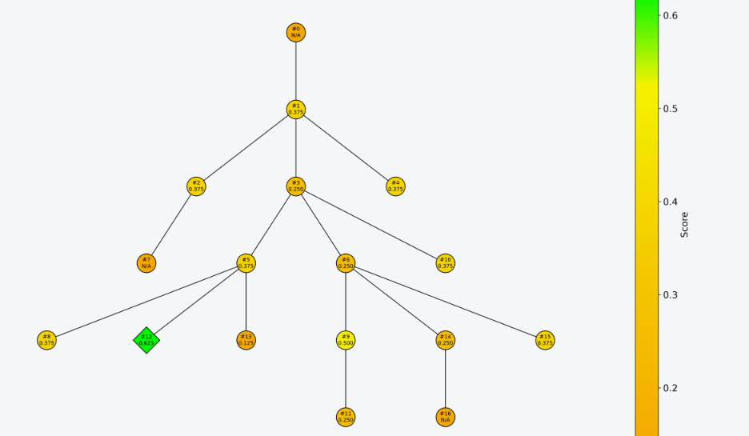

DGM-H(HyperAgents)라는 자기개선 에이전트 위에 A-Mem(메모리)과 Causal Attribution 툴을 추가함. Deep-SWE에서는 DeepSeek-V4-Flash-0731 모델로 코딩 에이전트의 개선을, 더 작은 CMU-FoodTruck Bench에서는 DeepSeek-R1-Distill-Qwen-32B 모델로 가게 운영 에이전트의 개선을 확인함.
방법
- Agent trajectory에서 실패의 원인이 되는 지점을 특정(Causal Attribution)하고, 개선 에이전트가 Patch를 통해 행동이 수정되는지 빠르게 검증(Counterfactual Analysis)할 수 있는 툴을 제공해 자기개선의 효율을 높임
- 실패 지점에서 Agent가 보고 있던 상태를 정확히 재현하기 위해, Agent를 FSM으로 구현하고 trajectory의 모든 step에서 state를 저장하는 방식을 제안함
결과
- DeepSWE subset 성공률 0.02 → 0.625. 기본 file tool만 가진 에이전트에서 출발해 Multi-pass와 Compaction을 지원하는 에이전트로 발전함
- 코드 리뷰 pass와 엣지 케이스를 시험하는 adversarial pass 도입
- 오래된 tool-call 결과를 점진적으로 truncate하는 compaction 도입
- 자기개선 에이전트가 PR 23개를 오픈하고, 초기 에이전트가 가진 tool 관련 버그 2개를 수정함
- 메타 에이전트 자신에 대한 개선 (진정한 의미의 재귀적 자기개선)
- 프롬프트를 재작성해 ‘이전 시도의 약점을 파악하고 타겟팅된 개선을 하라’는 지침을 세움
- 에이전트의 진화 lineage와 각 세대의 eval report·점수를 요약해 자기 자신의 프롬프트에 주입하는 함수를 만듦
- bash.py처럼 위험한 파일을 건드릴 때 smoke test를 거치는 안전장치를 도입
- 실제 Reward Hacking 시도들이 PR human-review 게이트에서 차단됨. Long-running loop에서 human supervision의 중요성을 확인함